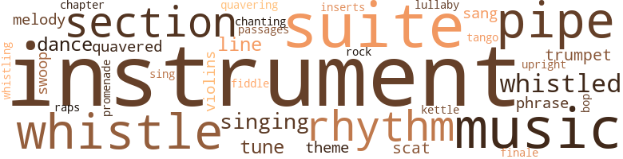
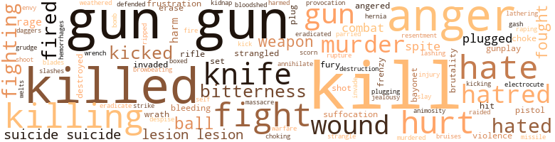

Checkmate and Deathmate, by Ashley, Martin (1973)
109 music-related terms matched in this text.
Most frequent terms in this topic: instruments (9); music (9); suite (9); whistle (7); section (5)
bop.v.01
Definition: dance the bebop
| word | sentence |
|---|---|
| bop | " If you were n't in sterile garb , I 'd bop you one . " |
chapter.n.01
Definition: a subdivision of a written work; usually numbered and titled
| word | sentence |
|---|---|
| chapter | A chapter out of his past stood there and its revelation was indeed a shock . |
cornet.n.01
Definition: a brass musical instrument with a brilliant tone; has a narrow tube and a flared bell and is played by means of valves
| word | sentence |
|---|---|
| trumpet | DEATH ATTEMPTS A CHECKMATE A clap of thunder resounded viciously through the dark murky veil of night , echoing in a majestic manner as if sounding the Royal Court entrance trumpet for the sheet of brilliant white lightning in all its magnificence shooting down the mountainsides , making night brighter than day as if making the resting sun envious of the display . |
| trumpet | The second trumpet sounded with the grunt of thunder and then another and another in quick rolling succession , resounding in more tremendous and stimulating style than that of the Philharmonic Orchestra kettle drums . |
dance.n.01
Definition: an artistic form of nonverbal communication
| word | sentence |
|---|---|
| dance | The Dude 's death water dance had given him great pleasure . |
| dance | The yo-yo went into a frantic dance at the sight and feel of the fifty dollar bill which swiftly went into his pocket . |
| dance | The yo-yo was still in a dance long after the tall man went down the hall to his room . |
finale.n.01
Definition: the closing section of a musical composition
| word | sentence |
|---|---|
| finale | As his words echoed to their finale , he detected a faint sound of some soft object falling . |
insert.n.01
Definition: a folded section placed between the leaves of another publication
| word | sentence |
|---|---|
| inserts | " Get me three of those plastic containers with the sterile tubing inserts that are in that storage cabinet on the wall . |
intonation.n.03
Definition: the act of singing in a monotonous tone
| word | sentence |
|---|---|
| chanting | But he had seen them kissing their dead and chanting , " In this way may I drink the blood of the man who killed you . " |
kettle.n.04
Definition: a large hemispherical brass or copper percussion instrument with a drumhead that can be tuned by adjusting the tension on it
| word | sentence |
|---|---|
| kettle | The second trumpet sounded with the grunt of thunder and then another and another in quick rolling succession , resounding in more tremendous and stimulating style than that of the Philharmonic Orchestra kettle drums . |
lullaby.n.01
Definition: a quiet song intended to lull a child to sleep
| word | sentence |
|---|---|
| lullaby | Placing his son back in the box he clutched the box to his midriff and rocked back and forth on his knees singing a lullaby . |
music.n.01
Definition: an artistic form of auditory communication incorporating instrumental or vocal tones in a structured and continuous manner
| word | sentence |
|---|---|
| music | A sound of faint music came to him amidst the noise of a shower . |
| music | A hoarse loud voice said " Hello " amidst background rock and roll music . |
| music | Michael , of course , remained the winner of any game that ended in a soft bed with the lights out and mood music whispering in a warm room . |
| music | The music was gay and there was laughter from people beyond the glass block tier that separated part of the penthouse . |
| music | He became lost in a deep valley with running water and beautiful music . |
| music | He turned on the radio at the headboard of the bed and soft chimes of music could be heard hut not as loud as their breathing . |
| music | Apparently a portable , for the music faded with the footsteps as the watchman went to his station posts in the distance . |
| music | They had seated themselves on the couch to listen to some sounds they called music . |
| music | The organ music stopped . |
musical_instrument.n.01
Definition: any of various devices or contrivances that can be used to produce musical tones or sounds
| word | sentence |
|---|---|
| instruments | " Will you need surgical instruments , sutures and the usual wrappings of vaseline or furacin gauze and bulky dressings ? " |
| instrument | He paused to strap on a previously pre pared instrument pack to his side , and withdrew an odd-shaped tranquilizer gun , seldom used by him . |
| instruments | The factual events that took place awed the women and Michael as they stood by handing instruments , adjusting valves and mobilizing equipment that meant life or death to the burned form that was now immersed in a warm green fluid except for his head and his shoulders . |
| instruments | The only sounds were the clicking of the instruments , the rhythmic tubular blowing of the Bennet Respirator and the low humming of small motors . |
| instrument | Thomas was busily undraping some instrument monitoring machines that had to be moved next to the tank . |
| instruments | " How about instruments ? " |
| instruments | He watched Judy as she assembled the operating gowns , towels , drapes and instruments for the sterilizer . |
| instruments | Others , other players were on the chessboard of life his unknowing instruments to whet his endless appetite . |
| instruments | " Judy tomorrow morning set up instruments for debridement of Dr. Lancelot 's face and prepare for a fat grafting session . " |
| instruments | Mrs. Whetlow was scurrying along with Judith Griffin setting up the surgical instruments . |
| instrument | The instrument nurse handed him the sponge attached to its long carrier instruments . |
| instruments | The instrument nurse handed him the sponge attached to its long carrier instruments . |
| instrument | He started to place the first suture and then handed the instrument to Dr. James . |
| instrument | He patted the instrument nurse on the back . |
passage.n.06
Definition: a short section of a musical composition
| word | sentence |
|---|---|
| passages | This procedure allowed some blood to continue toward the heart through the large blood vessel ; these smaller-made passages served as a filter to large clots that might be dislodged from the dilated veins of the legs . |
phrase.n.02
Definition: a short musical passage
| word | sentence |
|---|---|
| phrase | The phrase sounded familiar to Leroy . |
| phrase | He was always wary of his white colleagues who used that phrase . |
pipe.n.04
Definition: a tubular wind instrument
| word | sentence |
|---|---|
| pipe | He placed his foot along the edge of the flowing water stream in the sewer pipe , to avoid making any noise of splashing water . |
| pipe | The sound would echo and magnify throughout the sewer pipe giving away his presence . |
| pipes | They skipped off with the boys still laughing , and went through sewer pipes and back alley fences home for super . |
| pipes | In the center of the room , was a large , low , level , multi-curved plastic-lined aluminum tank with inlet and outlet pipes connected to small electric pumps at its curved side . |
| pipes | The inlet and outlet plastic tubing pipes were connected to a larger cylindrical tank . |
| pipe | He approached the car and felt the exhaust pipe . |
| pipe | Two quick slashes across his neck laid open his huge blood vessels and wind pipe . |
promenade.n.01
Definition: a formal ball held for a school class toward the end of the academic year
| word | sentence |
|---|---|
| promenade | She stopped the promenade and grabbed his arms looking up to his face . |
rap.n.05
Definition: genre of African-American music of the 1980s and 1990s in which rhyming lyrics are chanted to a musical accompaniment; several forms of rap have emerged
| word | sentence |
|---|---|
| raps | His ' honest ' blackmailed partners would see that he escaped legal raps . |
rhythm.n.04
Definition: the arrangement of spoken words alternating stressed and unstressed elements
| word | sentence |
|---|---|
| rhythm | The shower rhythm . |
| rhythm | Suddenly the Bennett machine 's monotonous rhythm was interrupted . |
| rhythm | The burned man was breathing on his own , fighting the rhythm machine ! |
| rhythm | Her rhythm of movement in the form fitting grey suit was even more stirring as she moved to accept the chair offered by him . |
| rhythm | Her gait interrupted in rhythm a moment then picked up to normal , as the Black Knight took her arm in his . |
rock_'n'_roll.n.01
Definition: a genre of popular music originating in the 1950s; a blend of black rhythm-and-blues with white country-and-western
| word | sentence |
|---|---|
| rock | A hoarse loud voice said " Hello " amidst background rock and roll music . |
scat.n.01
Definition: singing jazz; the singer substitutes nonsense syllables for the words of the song and tries to sound like a musical instrument
| word | sentence |
|---|---|
| scat | " Okay then , let 's roll , " said the Dude as he climbed into the back scat of the car . |
| scat | He then pushed the man back onto the car scat cushions and extracted the car keys from the ignition . |
section.n.01
Definition: a self-contained part of a larger composition (written or musical)
| word | sentence |
|---|---|
| section | The doors opened and they stepped into a large living section , which he learned was called a penthouse . |
| section | After several miles it drew to a half stop as it approached a graveled car-park section at the side of a hill that looked down upon the estate properties nestled below . |
| section | He then proceeded to his next section about the big building . |
| section | The man took aim at the bedroom section of the split level home and again the bazooka sounded . |
| section | He soon left the sleek residential section behind and was in the miners ' home section now , where they still slumbered awaiting the coming dawn to climb back into their pits again and dig the innards out of the earth 's heart , and face possible death in spite of all those fancy safety precautions both unions and management alike invoke . |
sing.v.02
Definition: produce tones with the voice
| word | sentence |
|---|---|
| sang | Skylight glass shattered as the gunshot sounded early , and the man turned toward his attacker hurrying another shot that sang in the air as it sped by the Black Knight harmlessly . |
| sang | Maggots sang and moved further up out of the still-bright sun light . |
| singing | Placing his son back in the box he clutched the box to his midriff and rocked back and forth on his knees singing a lullaby . |
| sing | The melody was the same that he used to sing to Pixie . |
singing.n.01
Definition: the act of singing vocal music
| word | sentence |
|---|---|
| singing | Julia could be heard singing . |
| singing | A group of inebriated men ambled from a closing bar singing " Sweet Adeline " in an uncommon key . |
| singing | Then he stopped singing as suddenly as he started . |
suite.n.01
Definition: a musical composition of several movements only loosely connected
| word | sentence |
|---|---|
| suite | This was Big Toby 's suite all right for he saw that black box on the bedside with the aborted fetus out of its case . |
| suites | Thomas Lippit lived in a luxurious set of suites in the Royalton Apartment Arms . |
| suite | Pixie 's father 's suite was around the corner , conveniently located across from Thomas Lippit 's suite . |
| suite | Pixie 's father 's suite was around the corner , conveniently located across from Thomas Lippit 's suite . |
| suite | He had studied the man , Tobias Logan , as he helped rum get settled in his suite . |
| suite | He dismissed himself and went down the stairs opposite the direction of Pixie 's suite . |
| suite | He quickly seized the opportunity and outwitted the maid in allowing him to deposit the linen in Dig Toby 's suite . |
| suite | He had found it easy to slip his phone number to Pixie during a cocktail break in her father 's suite , and she slyly placed it in the bosom of her dress in his direct vision while her father 's back was turned . |
| suite | " Then definitely dinner at my suite in the Sunset Arms at eight . |
| suite | The Black Knight checked his equipment and departed from his suite . |
swoop.n.01
Definition: (music) rapid sliding up or down the musical scale
| word | sentence |
|---|---|
| swoop | As he had rounded the corner at one of the docks , he had noticed a human form perched on one of the high pier posts , much like that of a huge sea gull about to swoop down into the water after its water prey . |
| swoop | Now and then a hat would swoop down upon the lighted area of a street lamp and feast upon the swarming flying night insects . |
tango.v.01
Definition: dance a tango
| word | sentence |
|---|---|
| tango | It took two to tango and somehow she had to get him to fall in love with her . |
theme.n.03
Definition: (music) melodic subject of a musical composition
| word | sentence |
|---|---|
| theme | He turned away with a disgusted sigh , thinking how could he ever forget it the way the white man kept playing the color theme up in this country . |
| theme | The situations were different but the theme the same . |
tune.n.01
Definition: a succession of notes forming a distinctive sequence
| word | sentence |
|---|---|
| line | Phil perked up as he followed Leroy 's line of thinking . |
| line | But the fact is that the Black Knight has to die too , for my own personal revenge and to teach others not to get out of line . " |
| tune | His only thought at this time was how nice it would be to pluck that yo-yo and bash it along yellow keyboard teeth to the tune of " Simple Melody . " |
| Melody | His only thought at this time was how nice it would be to pluck that yo-yo and bash it along yellow keyboard teeth to the tune of " Simple Melody . " |
| line | And most of you white men fall for this line of cheap psychology . |
| tune | Jim left humming an unfamiliar off key tune . |
| tune | The tubing pumps softly clicked their rhythmical tune . |
| melody | The melody was the same that he used to sing to Pixie . |
upright.n.02
Definition: a piano with a vertical sounding board
| word | sentence |
|---|---|
| upright | But that 's the way Charlie was , upright , thorough and polished with decency . |
violin.n.01
Definition: bowed stringed instrument that is the highest member of the violin family; this instrument has four strings and a hollow body and an unfretted fingerboard and is played with a bow
| word | sentence |
|---|---|
| violins | One wall was decorated with apparent small replicas of violins with small plaques beneath each one . |
| violins | A cabinet which was locked contained four violins - old as evidenced by the cracking of the varnish and worn edges . |
| fiddle | Being second fiddle to a white man did n't appeal to him at all . |
warble.v.01
Definition: sing or play with trills, alternating with the half note above or below
| word | sentence |
|---|---|
| quavered | Her voice quavered . |
| quavered | Ebonezer 's gun had quavered . |
| quavering | She seemed slightly stunned and her voice was quavering when she spoke . |
whistle.v.01
Definition: make whistling sounds
| word | sentence |
|---|---|
| whistled | The unit whirred , whined and whistled amidst internal gurgles from within its metallic innards . |
| whistle | Leroy gave out a low whistle . |
| whistle | Ebonezer gave a long whistle . |
| whistled | The morning shower felt good and he whistled throughout his shave . |
| whistling | Michael assured him that he would honor the requests and left Leroy at the elevator as he bounced lightly on his heels toward the kitchen whistling . |
| whistled | Leroy whistled in amazement . |
| whistled | The soft breezes of the autumn air whistled through the maple trees sending down in tumultuous rhythmical fashion the multicolored leaves upon the deep green front lawn of the Middleton Cemetery , The sound of the breezes was only surmounted now and then by a passing car on the fronted streets , or the sound of tires scraping along the gravel of the U-shaped drive leading to the cemetery entrance . |
| whistle | After a long minute a low whistle finally erupted from his lips . |
| whistle | He let out a low whistle . |
| whistle | Philip gave a low shrill whistle of amazement as he walked over to the tank and circled it . |
| whistle | A low whistle escaped from the Black Knight . |
| whistle | Phil let out a low whistle to further acclaim his astonishment . |
614 violence-related terms matched in this text.
Most frequent terms in this topic: gun (104); kill (68); killed (40); anger (31); hate (26)
aggravation.n.02
Definition: unfriendly behavior that causes anger or resentment
| word | sentence |
|---|---|
| provocation | " Right and he still has the shipment and papers to boot concealed , to release at any undue provocation from Titus Jordan . " |
anger.n.01
Definition: a strong emotion; a feeling that is oriented toward some real or supposed grievance
| word | sentence |
|---|---|
| anger | There was anger in Tod Jenner 's face , anger at not being able to safeguard Mrs. Lancelot or know who his enemy was . |
| anger | There was anger in Tod Jenner 's face , anger at not being able to safeguard Mrs. Lancelot or know who his enemy was . |
| anger | There was little need nor time , for anger to be directed to Big Joe . |
| anger | She slapped his face resoundingly and Tobias puffed in anger and responded with a hard slap of his own that caught her on her left ear with such force that it knocked her onto the large circular bed . |
| anger | Big Toby roared in anger and struck out at her again , again , and again striking her with no mercy . |
| anger | He quivered as his anger of Pamela 's rejection slowly subsided . |
| Anger | Anger engulfed him as he noted her bludgeoned face and bloodied , strewn , red hair . |
| anger | " You ! " he finally exclaimed in anger , realizing that this was the Black Knight . |
| anger | The Black Knight 's shoulders slumped as his anger subsided , and then he became more conscious of the battering the suite was taking . |
| anger | It 's a bad word and I have seen grown Negro men fight white men because of anger of the word , and be killed by other whites for doing so . |
| anger | The anger and hatred for the white man blossomed again and he defied their code of women twice more , and the women were willing and gave in to him time and time again . |
| anger | When he had finished his face was red and he was shaking in anger . |
| anger | There was anger in the sobs now . |
| anger | There was anger in her voice again . |
| anger | There was anger in her eyes as she stepped back from him . |
| anger | Her voice was cold and her body shivered in anger beneath his arms . |
| anger | Her anger was stirred . |
| anger | Men like that would speak freely of cohabiting with the Negro woman hut howl with anger and hoist a rope at the mere thought of a black man intercoursing with a white woman . |
| anger | The drums of anger rolled in him as he thought of how the racist forever struggled to separate the races , even in Congress against the Civil Rights Bill up for vote , when it was known through history that the ultimate race of the future would be a mixture . |
| anger | It 's possible that he 's smart enough to realize that he is tampering with a big outfit , which he is and that by inciting anger too much , the Syndicate would really blow him off the face of the map . |
| anger | The few moments gave Leroy time to cool off his presumptuous anger at the suggestion of moving Dr. Charles Lancelot . |
| anger | Judy 's eyes shone amidst near tears and anger at Leroy 's thwarted concern of his decision . |
| anger | " Then why in the hell did n't you stay put till I got here ? " he bellowed in anger . |
| anger | There was only anger that shook his frame . |
| anger | Philip had only noticed the anger that shone for a moment in her eyes as they collided with his . |
| anger | The thought of that frightened tormented cat scurrying and writhing in pain sent old anger through him once again . |
| anger | Its vapors partially numbed the anger in him . |
| anger | The anger in him was somewhat toned down , but constantly in his mind was a review of methods to kill scum like Big Toby and the Dude . |
| anger | She pulled his head down to her gently and kissed him softly and it seemed to settle the anger within him . |
| anger | Pixie subconsciously recoiled at the hint of anger directed at her . |
| anger | Tod Jenner 's jaws quivered with anger . |
| anger | His anger had teletyped in his driving as he nearly missed a turn . |
anger.v.02
Definition: become angry
| word | sentence |
|---|---|
| angered | The last part angered him . |
| angered | As she looked up , seemingly her eyes met his , and she was startled by her own inward fear that this man knew he angered her to the most inner core , and that she hated him for this . |
animosity.n.01
Definition: a feeling of ill will arousing active hostility
| word | sentence |
|---|---|
| animosity | There was no sense in taking his animosity for the white man out against her . |
bayonet.n.01
Definition: a knife that can be fixed to the end of a rifle and used as a weapon
| word | sentence |
|---|---|
| bayonets | The Korean campaign was drawing to a close when he had killed his first Chinese Red in a combat duel with bayonets . |
| bayonet | His bayonet had sunk in the belly much like sticking a stick in cow muck . |
bleeding.n.01
Definition: the flow of blood from a ruptured blood vessel
| word | sentence |
|---|---|
| bleeding | He went berserk and raced onward to seek out his quarry like a mad , raving tormented bleeding tournamental bull . |
| hemorrhages | Therefore , more harm can he done with the anticoagulants by hemorrhages appearing where they should n't be . |
| bleeding | The snap Leroy felt in his outstretched hand told him of its presence and be applied it to the exposed surgical field for unwanted bleeding . |
bloodshed.n.01
Definition: the shedding of blood resulting in murder
| word | sentence |
|---|---|
| bloodshed | Senator Hill had appealed also for less bloodshed on his part so that the " guilty parties in the conspiracy against the people of the United States could bear witness against those who were not yet known . " |
box.v.03
Definition: engage in a boxing match
| word | sentence |
|---|---|
| boxed | Two unmarked trucks had turned in on the avenue behind her and had boxed her in . |
bruise.n.01
Definition: an injury that doesn't break the skin but results in some discoloration
| word | sentence |
|---|---|
| bruises | He surmised that she might have a broken rib and some other bruises but that was all . |
contemn.v.01
Definition: look down on with disdain
| word | sentence |
|---|---|
| scorn | She knew she had scored and arose from the bed to face him with all her scorn . |
| despise | " I really despise your sense of humor . " |
craze.n.02
Definition: state of violent mental agitation
| word | sentence |
|---|---|
| frenzy | At the party , in a drunken frenzy , he had gambled in cards unknown to me , and lost . |
| frenzy | It was memories of her and her softness that had driven him into a work frenzy , to forget how she had used him as well as other males to satisfy her nymphomanistic desires . |
cut.n.05
Definition: a wound made by cutting
| word | sentence |
|---|---|
| gash | Her white skirt and blouse were stained with her blood , but he found only the gash in her left eyebrow as the source of her blood . |
| slashes | Two quick slashes across his neck laid open his huge blood vessels and wind pipe . |
dagger.n.01
Definition: a short knife with a pointed blade used for piercing or stabbing
| word | sentence |
|---|---|
| daggers | Leroy had noticed that even Judy had joined in the laughing sessions and that the daggers that she directed toward Phil throughout luncheon had dwindled . |
destroy.v.04
Definition: put (an animal) to death
| word | sentence |
|---|---|
| destroyed | Soon the entire underworld would be his kingdom and then the entire world of nations would have to bargain with him or be destroyed one by one individually , or as a group . |
| destroyed | Debra 's little body was too badly destroyed for public viewing . |
electrocute.v.02
Definition: kill by electrocution, as in the electric chair
| word | sentence |
|---|---|
| electrocute | " The safe is rigged so that it will electrocute anyone who enters it unless he presses a secret button on the jamb of the safe door . |
eliminate.v.03
Definition: kill in large numbers
| word | sentence |
|---|---|
| eradicated | Other cities and other states and even countries had misfits that needed to be eradicated . |
| annihilate | He could virtually annihilate the whole organization if he ever got trapped by the law . " |
| eradicate | As he surveyed the immensity of the task before him he began to have doubt as to whether or not be was actually big enough to eradicate Big Toby and his organization . |
envy.n.01
Definition: a feeling of grudging admiration and desire to have something that is possessed by another
| word | sentence |
|---|---|
| envy | " Maybe it 's a psychological inward hatred or envy for those who can have children , " he chimed in . |
erase.v.01
Definition: remove from memory or existence
| word | sentence |
|---|---|
| erases | But it erases nothing . |
| erase | " Dr. Lancelot I will erase for you at $ 25,000 . |
ferociousness.n.01
Definition: the trait of extreme cruelty
| word | sentence |
|---|---|
| brutality | He was tall , as Leroy had observed before , and the cut of his uniform bespoke of a body frame underneath that was well taken care of and well accustomed to the brutality of men and dealing with their maddened onslaughts . |
| brutality | The board of directors bad opposed bis using hospital facilities for such experiments two years ago , primarily because of public opinion in town concerning brutality to animals . |
fight.n.02
Definition: the act of fighting; any contest or struggle
| word | sentence |
|---|---|
| combat | The otner man , not quite so tall and obviously much younger was also striking and displayed a dimpled scar on his left cheek that probably resulted from war combat . |
| combat | Consequently , he was shipped overseas for combat service earlier than usual by his commanding officer as a most able bodied soldier . |
| combat | But he survived all combat engagements and won a Silver Star . |
| combat | The Korean campaign was drawing to a close when he had killed his first Chinese Red in a combat duel with bayonets . |
fight.n.05
Definition: a boxing or wrestling match
| word | sentence |
|---|---|
| fight | " Sorry to cut you off like that , Ebonezer , but there 's a proxy fight going on involving a stock interest I have . |
| fight | This is my fight all the way . " |
| fights | There had been mirth , concentrating on football , baseball , the fights , or a broadway show in town . |
| fights | Her real name was Pamela Logan , but she disliked Pamela because her schoolmates had called her " Pain the Ham " for which she had had many fights . |
| fight | You probably remember his death in a gangland fight seven or eight months ago . " |
| fights | Her blue eyes in the dim street fights , aroused him ever so gently . |
| fight | He sat up on the edge of the bed , now grasping for full wakefulness , sensing he would be up for a long while , so why fight it . |
| fight | It was always a fight resisting Philip 's overt manhood when the man she really wanted was beside her . |
| fight | I will have to stop him , and all I can say is that it will be a bloody fight . " |
| fight | If you do lose , let it be in the fight . |
fight.v.02
Definition: fight against or resist strongly
| word | sentence |
|---|---|
| fight | " Because I 'm still in the dark about this and I do n't know who I 'm really trying to fight . |
| fought | The Dude fought again and again against his bonds . |
| fighting | He selected the proper route to the polo farm , halfway fighting himself not to go to the Jordan Art Gallery to seek out Big Toby . |
| fighting | She bit her lower lip fighting the pain , " Yes , Lance , but be careful of the dogs . " |
| fight | They did n't want to come but could n't fight against guns or they would have been killed . |
| fight | The white men then started to fight among themselves . " |
| fight | It 's a bad word and I have seen grown Negro men fight white men because of anger of the word , and be killed by other whites for doing so . |
| fight | It 's just like someone called you a ' sissy ' and you get so mad you want to fight . " |
| fighting | So he had gone to the army with great reluctance and bitterness about fighting for a democracy that did n't exist for him or other Negroes . |
| fighting | His excellence as a fighting soldier came natural to him and he bad inwardly thought the C.O. was hoping he would be killed and end his worries . |
| fighting | His assistants do n't have the brains that Al had , and are fighting them hut thus far three of his organizers are dead to only one of the Mafia 's sister organization , the Dahlias . " |
| fight | I have nothing left to do but fight them till they see that I mean business too . " |
| fighting | " No more , Pixie , " He said still fighting for his full composure . |
| fighting | The burned man was breathing on his own , fighting the rhythm machine ! |
| fighting | From the sounds on the roof top I believe that he was fighting with someone else up there . |
| fought | He fought it and turned to his coffee cup as her eyes nearly caught his surveying glances . |
| fought | He fought the disturbance and called out to Mary Lou . |
| fight | " Now I have to fight Washington to keep him , when it looked like I had him all to myself . " |
| defended | It was difficult for Leroy to get Phil to talk about his past employment records at six different hospitals , but it had to he talked over , as Leroy definitely felt Phil would have to he defended at the Credentials Committee meeting before his acceptance as a member of the organization . |
| fought | Too invitingly , he thought , as he fought hack the primitive desire within him as he always did in her presence , and spoke in a monotone voice which surprisingly to him was calm and collected yet authoritative . |
| fight | Now drink this and let 's not fight . " |
| fought | Leroy fought it and finally succeeded in tearing his eyes from hers . |
| fighting | Most of the people were silently fighting the much consumed liquor and food . |
| fight | Now and then he had to fight off a rat that had clamored in fright upon his back evidently terrified at his rapid approach . |
| fight | How in the hell to fight them ? |
| fight | Should he fight them ? |
| fight | He could n't fight the Syndicate alone . |
| fight | In their background a burned man continued to fight for the privilege of also being cheerful again someday ... if ever . |
| fight | But then his father 's words came to him out of nowhere . . . " Son , do n't ever admit defeat before you fight . |
| fight | And when you fight , do n't think defeat . |
| fight | When she was away it was easy to fight off , but when she was present she aroused him immensely and he knew that site knew . |
flog.v.01
Definition: beat severely with a whip or rod
| word | sentence |
|---|---|
| lathering | Oh , how she admired this man and then she sighed as she stepped into the shower and began lathering her body . |
frustration.n.03
Definition: a feeling of annoyance at being hindered or criticized
| word | sentence |
|---|---|
| frustration | Over and over in his mind the image of the burning ambulance bearing his brother 's body flashed in his mind , and the hatred and frustration tore deeply into him . |
| frustration | The frustration of the underworld was obvious . |
fury.n.01
Definition: a feeling of intense anger
| word | sentence |
|---|---|
| rage | He turned facing the Black Knight , his eyes bugged and his body trembled in uncontrollable fasciculate rage . |
| rage | The fat on his frame shook with rage . |
| rage | He slammed the phone down and buried his head in his hands shaking with uncontrollable rage . |
| fury | Her legs were straddled and her hands were on her hips as before when he had faced her fury . |
| fury | Her fury rose and she gave him a resounding slap to his face which never landed . |
gag.v.06
Definition: cause to retch or choke
| word | sentence |
|---|---|
| choke | The Black Knight jerked backwards to give himself the needed room and brought up both hands and arms swiftly between Big Toby 's breaking the choke hold . |
| choking | He half stumbled choking all the way to the side entrance of the mansion to the stable court yard . |
| choke | They aim to choke me dry . |
grudge.n.01
Definition: a resentment strong enough to justify retaliation
| word | sentence |
|---|---|
| grudge | They still hold a grudge against me after all these years . |
gun.n.01
Definition: a weapon that discharges a missile at high velocity (especially from a metal tube or barrel)
| word | sentence |
|---|---|
| gun | " Do you have a gun ? " |
| guns | I had enough of guns in Korea . " |
| gun | A gun permit meant an address had to go on the application blank . |
| gun | '' Well , if you change you mind about the gun , just let Captain Blake at Police Headquarters know . |
| guns | They were mortar guns primarily , but had been ingeniously altered by the Dude with the incorporation of a timer mechanism with a small explosive charge , to trigger the firing pin of the mortar unit . |
| guns | Both guns were aimed in the direction of Marks Hospital Rest Home some two thousand yards away . |
| gun | Together they moved to the other mortar gun a couple of yards away . |
| gun | The second mortar gun was as equally an important one . |
| guns | Their guns dropped as the Dude and Jim were recognized . |
| gun | " Jim , let 's get this bazooka rocket gun assembled now . " |
| gun | The same hill where the mortar gun was aimed ! |
| gun | " In exactly forty minutes the first mortar gun will go off . |
| gun | The Dude interrupted his stroking of the bazooka gun and pointed to the opposite hillside across from them . |
| gun | He skirted the house with gun ready . |
| gun | Placing his gun back in the holster , he unsheathed his knife from his left wrist . |
| gun | He removed his gun and started up . |
| gun | He had not gone more than fifteen feet when he became confronted by a burly man with a menacing gun . |
| gun | Forgive me ! " he cried as he raised his hands and the gun to the darkened skies . |
| gun | He arose to a crouch with gun ready . |
| gun | The presence of George 's menancing gun pointing at him stilled him from rising again . |
| gun | George stood behind the Dude with the gun very close to his neck . |
| gun | The Dude slammed the case to the floor but remained seated as he felt George 's gun muzzle bite into his neck . |
| gun | Your death at the hands of George 's gun would cause me no sorrow . |
| gun | Instinct caused him to brake the car and reach for his gun in the shoulder holster . |
| gun | But a gun nuzzled at his throat and the word " Do n't " cautioned him . " |
| gun | " Drive on quickly , " the dark figure ordered and eased the gun back , as Tod Jenner complied . |
| gun | " And do n't touch your gun or the police radio . " |
| gun | The Black Knight leaned over and eased Tod Jenner 's gun from his shoulder holster . |
| gun | He raised the barrel of the gun to the level of Jenner 's neck , " You place me in an awkward position Tod Jenner . |
| gun | Ebonezer 's gun had quavered . |
| gun | Ebonezer 's gun hand was even lower . |
| gun | His gun came up again neck high , Jenner 's neck high . |
| gun | In fact , " he added as he slid the safety catch off the gun , " I 'm not so certain I can afford to let you live . |
| gun | Tod Jenner moved quickly into the steering wheel , brushed the gun aside and stabbed four fingers into the Black Knight 's throat before he completed the pressure on the trigger . |
| gun | Jenner half dazed sought out his own gun lying between the Black Knight 's knees and managed to struggle free of the still gasping , defuddled Black Knight . |
| gun | He sat up , pointing his gun at his midriff and the Black Knight 's gun pointing at him . |
| gun | He sat up , pointing his gun at his midriff and the Black Knight 's gun pointing at him . |
| gun | I know if I pull this trigger you can shoot your gun by reflex alone to kill me . " |
| gun | " Here , " Jenner replaced the safety on his gun and turned it over backwards to the Black Knight . |
| gun | He holstered his gun and handed Jenner 's back to him . |
| gun | His gun ready he advanced through the kitchen and into the living room . |
| gun | He entered the bedroom , his gun waist high . |
| gun | The Black Knight turned his gun instinctly to the sound of rushing bare feet and fired twice into the nude figure of the Dude as he emerged from the bathroom . |
| gun | " You bastard , " the Dude yelled and leveled his gun at the now crouching Black Knight close at hand . |
| gun | The Black Knight pivoted on his elbow and kicked his full length at the gun held by the Dude knocking it on the floor . |
| gun | The Dude fell grabbing for the gun yelling and screaming . |
| gun | He leveled his gun again at the crimson stained mid-riff heaving before him . |
| gun | Ebonezer lowered the gun again aiming it at the Dude 's belly . |
| gun | Use the gun ! |
| gun | Kill me with the gun . |
| guns | He left the bathroom wearily and turned with his mask in hand to face two unexpected visitors facing him with two deadly guns . |
| gun | Negro with gun and goggled cowl in hand . |
| gun | He rolled over facing the men with his gun to take advantage of their misses , but saw them fall in a heap simultaneously . |
| gun | He paused to strap on a previously pre pared instrument pack to his side , and withdrew an odd-shaped tranquilizer gun , seldom used by him . |
| gun | He cocked the tranquilizer gun compressor chamber and eased the sewer grate up slowly , a centimeter at a time . |
| gun | " No , you stay here and take his gun . " |
| gun | The other man on his knees grabbed for his gun in his shoulder holster . |
| gun | The Black Knight looked up to Jenner kneeling at the stablecell door with cocked gun . |
| gun | He aimed the tranquilizer gun at the light and shot it out . |
| Gun | Gun shots whined about hint as he forced a zig-zag course to the stable . |
| gun | He raised his gun as he was conscious of another flashlight ahead . |
| gun | A robust shirt-sleeved man appeared at the door with a heavy gun strapped across his chest . |
| guns | They did n't want to come but could n't fight against guns or they would have been killed . |
| gun | Turning , he was confronted by white-suit who was looking up at him , white teeth grinning and a very , very , large gun pointed at his belly . |
| gun | The gun aimed higher for his chest . |
| gun | The gun then had aimed higher and the grinning white-suit had taken careful aim . |
| gun | Sometimes an elected politician would not hear from Big Joe until the moment he needed him and the squeeze would be put on and Big Joe got what he wanted , property rights , a cargo license carrier service , gun permits , liquor licenses , fire inspection okay 's without inspection of the illicit buildings owned by Big Joe , and any other legislative device necessary to protect himself or his organization . |
| gun | It was as if the Army did n't want to trust him with a gun anymore . |
| gun | " You got a gun ? " |
| gun | Startled into a rude awakening , he quickly rolled off the couch and was on his abdomen instinctively with gun in hand . |
| gun | His senses fully awakened , he found himself lying there with the gun pointed at the middle of a red headed , equally startled figure standing in front of him . |
| gun | He lowered the gun and placed it hack in the belt holster as he had gotten up . |
| gun | I did n't know you carried a gun . " |
| gun | Someone was killing him with a machine gun ! |
| gun | Not knowing who it was , he instinctively reached for his gun under his pillow only to find it checked by a soft hand . |
| gun | Ebonezer slipped his gun out of his holster and held it by its muzzle . |
| gun | Simultaneously he had brought the gun butt across the back of the man 's head . |
| gun | He checked his gun and its weight felt good in his hand . |
| gun | He let a cartridge slip noiselessly into the chamber ... he and his gun were both ready . |
| gun | He replaced his gun and walked back to his car . |
| gun | He checked his gun in the darkness and adjusted the srraps that held the razor sharp twelve inch knife on his left forearm . |
| gun | He replaced it ana nulled out his gun . |
| gun | He released the safety catch of his gun and stealthily walked near the fence . |
| gun | He raised his gun but the range was too far for perfect accuracy and he needed that shot to be accurate . |
| gun | He turned in a crouch and a burly figure stumbled into him , grunting as the figure missed a lethal gun butt blow to his head . |
| gun | The man was angry now and came for him with gun butt ready . |
| gun | The gun butt blow fanned the breeze harmlessly . |
| gun | One of the patrolman removed the gun . |
| guns | They entered the house and were greeted by two other men , both thin and wearing holstered guns . |
| gun | He handed the spray gun to Phil . |
| gun | A man was perched in the tree with a gun directed at the Dude 's head . |
| gun | His gun , knife and cunning were tailored only to cope with what he could see and feel . |
| guns | " Then I have to move fast before he gets too big and has the entire Syndicate big guns looking for me . " |
| gun | As the dumbwaiter slowed its ascent to a complete stop the Black Knight readied his gun . |
| gun | A shoulder holster with a gun within lay upon the table next to the sofa . |
| gun | He crept forward upon his knees and picked up the gun . |
| gun | Silently he dismantled the bullets and replaced the gun in the holster . |
| gun | He regathered the gun and replaced the bullets . |
| gun | The Black Knight pulled his gun from his holster and slipped up to the enclosure wall of the office . |
| gun | A quick flip of his wrist sent the gun butt into the man 's lower skull . |
| gun | He reached for his gun . |
| gun | As he leveled the gun at the man 's head he stopped . |
| gun | He kept the gun ready and turned the man over face up , and turned his flashlight on . |
| gun | He hurriedly slipped his gun back into his shoulder holster and dragged the man into the alley . |
| gun | He felt naked without his gun and knife as he left his apartment . |
| gun | Without his gun or iis knife , he felt uneasy and unprotected . |
| gun | He felt so naked without his gun or knife . |
| gun | Once in the apartment he strapped on his gun and knife . |
| gun | The immediate comfort of the gun and knife caused a satisfying mood to settle upon him . |
| gun | Ebonezer adjusted his gun and knife . |
| guns | From what I gather , Big Toby has been holding blackmailing evidence against the top guns of the Syndicate , and has gone to Chicago to confront all of them with the evidence . |
| gun | Instinctively , he fell to a crouch and grabbed for his gun . |
| gun | In a blinding flurry , he found his crouch turned into an embarrassing sprawl on the floor and his gun being pried out of his hand by seemingly steel fingers . |
| gun | Tod Jenner 's gun rested in the man 's hands . |
gunfight.n.01
Definition: a fight involving shooting small arms with the intent to kill or frighten
| word | sentence |
|---|---|
| gunplay | The Dude had heard the gunplay and the howling . |
| gunplay | The gunplay had given them time to get to the car and they both jumped into the back seat . |
harm.v.01
Definition: cause or do harm to
| word | sentence |
|---|---|
| harmed | She was not harmed . |
hate.n.01
Definition: the emotion of intense dislike; a feeling of dislike so strong that it demands action
| word | sentence |
|---|---|
| hatred | Over and over in his mind the image of the burning ambulance bearing his brother 's body flashed in his mind , and the hatred and frustration tore deeply into him . |
| hatred | It had partly satisfied his vengeful hatred for the death of little Debs and the near death of his brother by this snake . |
| hate | At that time he could n't understand his Dad 's inward hate of the world . |
| hate | As you grow up you will see that you will hate , but you will also learn that you can not do anything about the hate or you will land in jail or be killed by the white man . " |
| hate | As the years rolled on , he and his brother soon began to understand the words of their father and his hate . |
| hatred | The anger and hatred for the white man blossomed again and he defied their code of women twice more , and the women were willing and gave in to him time and time again . |
| hate | Am I included in that circle of hate ? " |
| hatred | He had risen from his chair and stood in front of Big Joe , looking down at him , his eyes full of fire and hatred . |
| hatred | You have seen this hatred of mine and tried to soften me up with white curvey women , good food and good money . |
| hate | All you white men seem to think we Negroes want is your white women and the hate mongers play on the stupid white man 's minds with this to further the rift between whites and Negroes . |
| hate | Your hate is too deep for you to see a friend when he is earnest . |
| hatred | " Maybe what you say is true about my deep hatred for the white man which blocks my ability to see a true friendship in any white man . |
| hatred | Your hatred and war experience would work out fine . |
| hatred | Inwardly he envied Charlie and his new-found happiness but he left with inward satisfaction that one of his Dad 's sons had survived the hatred for white men that his Dad had left as a legacy . |
| hate | In his craftiness and skill in the art of killing , as well as in being an impartial hired executioner , he found his job satisfying to his sadistic hate for the white man . |
| hatred | " Maybe it 's a psychological inward hatred or envy for those who can have children , " he chimed in . |
| hatred | Big Joe had learned not to try and change the embittered hatred for the white man imbedded in him . |
| hatred | Flis life had always been geared for the immediate day , the next kill , hatred for the white man and the corruptness which he helped to create , destroy and reshape as he thought it should be . |
| hate | The gambit was on and it filled with hate and death to protect the Kingdom that was there for Charlie in that eighth rank of security , peace and happiness . |
| hatred | But society had a lot to share in that blame for hatred had been instilled in him long before he , Big Joe Walton , had helped to mold him into what he was . |
| hate | There was more sanity to love than to racism which in his mind was ugly unadulterated hate . |
| hatred | But time would change that for he could trust her ; she would give him every opportunity to eject himself out of the shell of hatred that enclosed him and prevented him from declaring his love for her . |
| hatred | Leroy 's eyes were cold with hatred at Phil 's staggering and seeking question . |
| hate | The bitterness and hate hung in his voice and big Joe felt very bit of it . |
| hatred | The pleasure of killing was too deep within the man and his hatred was both immense and juvenile . |
| hate | His thoughts flowed so bitterly that he grew cold from shivering with hate . |
hate.v.01
Definition: dislike intensely; feel antipathy or aversion towards
| word | sentence |
|---|---|
| hate | I hate you and do n't want any part of you any longer . " |
| hate | You ca n't make me hate him because I know he loved me and I love him . |
| hate | I hate you ! |
| hate | I hate you ! |
| hated | He hated snakes . |
| hated | Their Dad hated the slums and cursed the day he was bom . |
| hated | The Southern white man hated the Negro because he was not his any more to own and care for like you do your dog , Spot . |
| hate | As you grow up you will see that you will hate , but you will also learn that you can not do anything about the hate or you will land in jail or be killed by the white man . " |
| hate | I hate him and his bigotry . " |
| hate | " And you ask me if I hate you . |
| hate | Then with an expressionless face he asked , " Do you still hate the white man enough to kill him ? " |
| hate | You may learn to hate me later for saving your life . |
| hate | I would never hate you . " |
| hate | If you knew the truth about me you would change your mind and you would hate me for what I plan to do in the near future . " |
| hated | He hated challenges because he always found them too tempting to refuse . |
| hated | I really hated to wait till ten thirty to call you . |
| hate | I do n't hate him but I do pity him . |
| hate | I pity him , but I do n't really hate him , " She then rolled over to him again and buried her head in bis shoulder . |
| hated | He hated calling Ebonezer Lancelot that name , but that 's what he was . |
| hate | " I ca n't say that I hate the man . |
| hated | She hated him secretly because she was accustomed to men crawling to her asking for her favors , but not this man . |
| hated | He had busily been occupied with consultations at Miners Hospital , and clearing his desk of that much hated paper work which was always a dreaded task . |
| hated | As she looked up , seemingly her eyes met his , and she was startled by her own inward fear that this man knew he angered her to the most inner core , and that she hated him for this . |
| hate | In short , I hate myself because l do n't measure up to what you deserve . " |
hernia.n.01
Definition: rupture in smooth muscle tissue through which a bodily structure protrudes
| word | sentence |
|---|---|
| hernia | His hernia had become strangulated and he was acutely ill . |
hurt.v.04
Definition: cause damage or affect negatively
| word | sentence |
|---|---|
| hurt | But what hurt me more than ever , was that he invited me to the same business convention party . |
| hurt | Father 's feelings will be hurt now since he wo n't know where I will be . " |
| hurt | Hut killing is wholly wrong and my father has hurt many thousands of people , and will continue to hurt others his greedy hands touch . |
| hurt | Your coldness has hurt Phil 's vanity and he is only trying to hide his hurt by joshing with you . " |
| hurt | There was hurt in Judy 's eyes , which he did not look into . |
| hurt | Does it hurt so much to admit love for another ? " |
hydrogen_bomb.n.01
Definition: a nuclear weapon that releases atomic energy by union of light (hydrogen) nuclei at high temperatures to form helium
| word | sentence |
|---|---|
| H-bomb | It seldom happens , when it does it 's like an H-bomb . |
injury.n.01
Definition: any physical damage to the body caused by violence or accident or fracture etc.
| word | sentence |
|---|---|
| hurt | Samuel Carstairs had sought to hurt her career because of his hurt vanity but the publicity only had added to her record sales and personal appearances . |
| harm | " I intend you no harm . |
| harm | He had seen no harm in telling her . |
| hurt | Your coldness has hurt Phil 's vanity and he is only trying to hide his hurt by joshing with you . " |
| hurt | Then he thought of Sandra and a sick hurt came about him . |
| injury | The pathology exists not only within the damaged cell cytoplasm and its sodium-potassium pump but also in the cell membrane which is a most active form of what we call chondro-muco-polysaccharide unit and is quite sensitive to the magnesium lost from its substance by injury of any form . |
| harm | Therefore , more harm can he done with the anticoagulants by hemorrhages appearing where they should n't be . |
| hurt | Phil saw the hurt in Judy 's eyes and smiled , " Okay kiddo . |
invade.v.01
Definition: march aggressively into another's territory by military force for the purposes of conquest and occupation
| word | sentence |
|---|---|
| invaded | He told him of a man who had set up an abortion racket to gain knowledge of the Syndicate 's prostitution ring , how this man had invaded the Syndicate racket with his own men and obtained blackmailing evidence against many of the big men in the Syndicate , how the secret bank vault had been tripped for ten billion dollars and how this man had forced an election in which he was elected as the King of the Syndicate , he also told him of the political ambitions of this man . |
| invaded | Joseph Walton 's tipsters supplied him with information leading to the location of the secret basement plant of the abortionists ' tools , but he had been sadly disappointed when he had invaded the premises two weeks later . |
| invade | It 'll mean certain death to invade his stronghold . " |
jealousy.n.01
Definition: a feeling of jealous envy (especially of a rival)
| word | sentence |
|---|---|
| jealousy | She had cried herself to sleep in his arms after begging his forgiveness for what she termed as a wanton act motivated by love for him , and jealousy of Sandra . |
kick_back.v.02
Definition: spring back, as from a forceful thrust
| word | sentence |
|---|---|
| kicked | The Black Knight pivoted on his elbow and kicked his full length at the gun held by the Dude knocking it on the floor . |
| kicked | The Black Knight kicked the Dude back on his back and looked at his dying face . |
| kicked | Pamela slumped to the floor , and he kicked her with such force that she bounced mightily against the wall and rolled into a silent heap . |
| kicked | The Black Knight holding the intact canister looked at the mound of jelly just ten feet from him and kicked the bedroom door shut with his foot . |
| kicking | The huge man 's feet began kicking the face beneath them in a steady tattoo and screams of agony pierced the room amidst gushes of blood from torn facial flesh . |
| kicked | He kicked the red stained shoes to the center of the floor . |
| kick | " When I kick tail in my work for you or batter a white jerk 's face in , I do it not necessarily for you or your organization , but because of the sheer delight of pulverizing a white man for making this world such a hell-hole , because I can not be happy with my existence here as an individual . |
| kicked | " I 've found him , Big Joe , but he just kicked the bucket . |
| kicked | She made her embrace as she kicked the sheet aside and swiveled her body to his . |
kidnap.v.01
Definition: take away to an undisclosed location against their will and usually in order to extract a ransom
| word | sentence |
|---|---|
| kidnap | He even had forewarned Joseph Bonanno of the Mob 's plan to kidnap him to be brought before the Commission for his planned coup of the Mob 's Commissioners . |
kill.v.10
Definition: cause the death of, without intention
| word | sentence |
|---|---|
| kill | It would be a pleasure to kill him . |
| kill | He had to pass up the chance to kill Big Toby for now and intercept the Dude . |
| kill | " You think there 's going to he another attempt to kill Dr. Lancelot tonight ? " |
| killed | Just like he killed poor Debs ! |
| killed | They both knew that Tony had been killed . |
| kill | " You let them kill my brother ! " |
| killed | " You only killed Dr. Lancelot . |
| kill | You failed to kill the Black Knight . |
| killed | You can have half of this twenty-five thousand now and it will be replaced later with the entire $ 125,000 in ' WHOLE ' bills when you offer me definite proof that you have killed the Black Knight . " |
| kill | " I ought to kill you for nothing . |
| kill | " If it will give you incentive to kill him in my behalf I will tell you . |
| kill | AH you need to know is who you are to kill . " |
| kill | Georgie Boy would like to kill him rather than a cat or dog right now . |
| kill | " Yes , I 'll kill him for you and your two hundred grand . " |
| kill | Also notify my two men who are shadowing the Dude to kill the survivor of the battle between the Dude and the Black Knight . |
| kill | If they fail to kill the Dude or the Black Knight , they shall be killed . |
| killed | If they fail to kill the Dude or the Black Knight , they shall be killed . |
| kill | The high potassium will kill him sure , " Leroy said , " I 'm going to hook up to the artificial kidney unit now before it really becomes irreversible renal failure . " |
| killed | They killed one of my men though . |
| killed | That makes four of my men killed since I got into this caper . " |
| Killing | Killing me would solve nothing . |
| kill | I seek the guilty parties , judge them , try them , conquer them by any means and kill them by any method and anywhere . |
| kill | I know if I pull this trigger you can shoot your gun by reflex alone to kill me . " |
| kill | " Yes , I must believe you but I 'm warning you Jenner , do n't cross me because I will find you and kill you . " |
| kill | You want to kill the man , eh ? " |
| killing | The Black Knight had not expected this psychological ' out ' in killing Pixie 's father but she did once as a child adore this man . |
| killed | " You 've killed him already ? " |
| kill | Do you want to kill them ? " |
| Kill | Kill me with the gun . |
| Kill | " Kill him ! " |
| kill | He had turned Big Toby over to the law just so he would n't kill him for Pixie 's sake . |
| kill | Tod Jenner did not want to lose this man for he felt sure that this was a big man in more ways than one , and strangely he felt also that this was the man the Black Knight wanted to kill . |
| kill | Now I 'm going to beat the living hell out of you and then kill you . " |
| kill | " I 'll kill you ! " |
| kill | " You get one more chance , Toby , then I kill you . " |
| kill | I 'm going to kill you . " |
| kill | Therefore , their deaths would hardly produce a national interest too soon , and time was what he needed in addition to the opportunity to kill . |
| killed | They did n't want to come but could n't fight against guns or they would have been killed . |
| killed | It 's a bad word and I have seen grown Negro men fight white men because of anger of the word , and be killed by other whites for doing so . |
| killed | As you grow up you will see that you will hate , but you will also learn that you can not do anything about the hate or you will land in jail or be killed by the white man . " |
| killed | His excellence as a fighting soldier came natural to him and he bad inwardly thought the C.O. was hoping he would be killed and end his worries . |
| Killing | Killing was not as difficult to do as he had thought it would be . |
| killed | The Korean campaign was drawing to a close when he had killed his first Chinese Red in a combat duel with bayonets . |
| killed | But he had seen them kissing their dead and chanting , " In this way may I drink the blood of the man who killed you . " |
| kill | Yes , to kill a Dahlia would certainly bring about the wrath of the Mafia . |
| kill | Then with an expressionless face he asked , " Do you still hate the white man enough to kill him ? " |
| killed | Through Big Joe 's information he had killed eight men of the Dahlia mob leaving behind a black knight chess piece as a memento . |
| killed | The newspaperman was killed " accidentally . " |
| killing | To him , this life was like the Korean War all over again , but this time it was not Chinese Reds he was killing , it was the white man . |
| killed | I could have killed you before l was fully awakened . " |
| killed | " You could get killed in your work ? " |
| killing | An international prostitution procurement agency which was tightly welded into the crime syndicate was being imposed on by an abortion ring to accept its services with high pressure methods , killing three of the procurement agencies ' representatives , who were well known entertainment figures . |
| killed | The name rang a familiar bell with Ebonezer , for it was he , the Black Knight , who had killed Jenkins . |
| killing | Someone was killing him with a machine gun ! |
| killing | He had some killing to do . |
| killing | He was fearful of being too hasty in killing Lippit and now he was glad that he waited . |
| kill | How he would kill him , he did not know . |
| kills | He wo n't think twice before be kills you . " |
| kill | " But even worse , I have been hired to kill him for a huge sum of money , along with obtaining some prostitution records he stole from the Crime Syndicate to use as blackmail . " |
| kills | I will have tears for him regardless of who kills him for he was good to me as a child , even though he resents me now . |
| kill | He did n't want to kill any more . |
| killing | " What 's more , they think the underground is seeking you for the job of killing him . " |
| kill | He followed their noisy path still looking for an opportunity to kill them but the darkness and the shrubbery-obstruction made it difficult to overtake them . |
| kill | Maybe they would somehow manage to kill him . |
| kill | " Yes , I still want to make use of cortisone to break up or kill the present circulating lymphocytes . |
| kill | He was sure that many a white man would like to kill him if they knew of the events that had transpired . |
| kill | They probably would want to kill her too because of her being a " nigger-lover " and would ostracize her for life . |
| kill | He looked at Leroy , " Why did that hooded man try to kill us or was it us that he intended to kill ? " |
| kill | He looked at Leroy , " Why did that hooded man try to kill us or was it us that he intended to kill ? " |
| kill | " If he had intended to kill os he certainly would have tried again when he stood there looking down at us , do n't you think ? |
| killed | I think if it was n't for him we might have been killed including our patient . |
| kill | " Did he try to kill you , Dr. Slatton ? " asked Judy as she placed a cold wet towel around his neck . |
| killing | " Do you mean that mystery man who seems to pop up all over the country killing off unsavory characters for the past seven or eight years ? " |
| killed | " Why he killed these two men I do n't know . |
| kill | So excuse me if I look the other way should I ever again see him kill a man who intends to kill me . " |
| kill | So excuse me if I look the other way should I ever again see him kill a man who intends to kill me . " |
| kill | Anyone who tried to kill him or did kill him would bring havoc to the entire crime syndicate across the United States and the world . |
| kill | Anyone who tried to kill him or did kill him would bring havoc to the entire crime syndicate across the United States and the world . |
| killed | All that 's known in the underworld circles is that two hired killers were killed by the Black Knight . |
| killed | Right now if he should be caught or killed , he could possibly expose better than eighty percent of the Syndicate 's members just on those two items of evidence he possesses now ! " |
| kill | And kill Big Toby at my leisure , " he added . |
| killed | " I 'm sure you must have realized he was n't when you saw that bullet wound of his scalp and also that night those two men were killed here . |
| kill | " You mean more hired killers will try again to kill Dr. Lancelot while he is here ? " |
| kill | " I am sure your adopted father will make another move to kill my brother . |
| kill | " Do you still have to kill him ? " |
| kill | This man was rumored to have accepted money to even kill a high ranking Washington official . |
| kill | If the Black Knight had any class to him whatever , I would charge you at least $ 250,000 , the exact same price that was offered to me to kill a big-time Washington man . |
| kill | I am luring you because of your cunning ability to kill . |
| kill | If you welch on the deal I 'll have you hunted down at any price and have you brought back to me so that I may personally kill you . |
| kill | " You told her yet you 're going to kill her adopted father ? " |
| kill | No big fat turd was going to kill the only " son " he had in the world . |
| kill | " I look for those prostitution records and possibly kill Big Toby tonight . " |
| kill | " The word is out that Big Toby has hired the Dude to seek you out and kill you . " |
| kill | He would make his move at one a.m. Maybe he would he fortunate enough to kill Big Toby and the Dude both tonight . |
| Kill | " Kill Dr. Lancelot 's wife before she leaves town in the morning . |
| killing | It still made him nervous , how close he had been to killing Julius . |
| killing | I 'm killing everything that looks like Big Toby 's fleas now and I 'm not taking any time out to tell who is for me and who is not . " |
| kill | The anger in him was somewhat toned down , but constantly in his mind was a review of methods to kill scum like Big Toby and the Dude . |
| killed | " They killed Debs ! |
| killed | They killed her . " |
| killed | Wild animals had to be hunted down and killed before they killed others . |
| killed | Wild animals had to be hunted down and killed before they killed others . |
| kill | They had tasted blood now and would kill again . |
| killed | She too was killed . " |
| kill | Killing Big Toby would n't kill the Dude 's intentions . |
| killed | He had to be found and killed . |
| kill | Once I kill the Dude and Big Toby the entire law enforcement agency of the country is going to investigate . |
| killed | " Two of my men were killed last night , while guarding Dr. Lancelot 's wife . |
| killed | A policewoman was also killed while guarding Dr. Lancelot 's wife . |
| killed | Dr. Lancelot 's youngest daughter was also killed in one of the two explosions that took place . |
| killed | My contacts feel that he is still in town and that it was definitely he who killed Debra and the law men . |
| kill | " Then . . . then you 're going out to kill him . |
| killed | It 's just that I 've grown so much in love with you that I fear that you are going to be killed every time you venture out on one of your contracts . " |
| killed | I did as I pleased , drank when I pleased and I stomped on whom I pleased , and even killed when I pleased . |
| killed | Just in case I get caught and killed by his White Knight , the Dude . |
| killed | " How was he killed ? " asked Tod Jenner . |
| killed | " I do n't know who killed August Thompson , but it is sure he is well versed in the art of killing . |
| killed | " Yes , I believe it 's the same man that killed two of my men and a policewoman two night 's ago . |
| kill | Somewhere the killer lurked waiting , waiting to kill again , and he felt helpless . |
killing.n.01
Definition: an event that causes someone to die
| word | sentence |
|---|---|
| killings | No more setting fires to cat 's tails and no more killings of little girls and ambulances , and no more pulling people apart by horses . |
| killings | Vengeful killings . |
| killings | The newspapers had played up the killings as if the Black Knight was an avenger to the crime menace that engulfed the city . |
| killings | All this for right killings . |
| killing | But nevertheless , the killing would have to wait until after he had procured the Syndicate 's prostitution records from this mountain of blubber . |
killing.n.02
Definition: the act of terminating a life
| word | sentence |
|---|---|
| killing | The other graft acceptances have been only partially accepted and this has been done with the use of various means to stop the recipient from producing antibodies against the graft by means of x-rays , cancer killing drugs , and steroids . |
| kill | You come here boasting of a kill when you have only fulfilled part of your contract , and demanding your money . |
| killing | No man would be a hired killer with a pattern for killing and then suddenly deviate from that pattern to jeopardize his own life for the safety of others . . . . unless they were related . |
| kill | I felt they wanted me to run with Dr. Lancelot so he could he out in the open for a sure kill . |
| kill | Big Toby advanced again with eyes red and breath hot and heavy intent upon the kill . |
| kill | Dr. Marks had trained them for quietness , and they seldom barked unless some unusualness occurred or after a kill of wild game . |
| killing | They pay big money for that and we 've made a killing in the past three months . |
| killing | In his craftiness and skill in the art of killing , as well as in being an impartial hired executioner , he found his job satisfying to his sadistic hate for the white man . |
| killing | Hut killing is wholly wrong and my father has hurt many thousands of people , and will continue to hurt others his greedy hands touch . |
| kill | Flis life had always been geared for the immediate day , the next kill , hatred for the white man and the corruptness which he helped to create , destroy and reshape as he thought it should be . |
| killing | That would sure come to light after his death and Big Toby 's lieutenants , like Lippit , would use it for all it 's worth and foolishly , I 'm sure , thus promoting a lot of emotional killing which would wreck the Syndicate network by investigations . |
| kill | But believe me , the vultures will be coming for the kill . |
| killing | I would n't have to do any killing for you at all and I would be twelve grand richer would n't I ? " |
| killing | After all , if things went well with the killing of Charles Lancelot , he could begin the pressure play on the Syndicate soon and move into a big house in Chicago with everybody doing his bidding . |
| killing | The pleasure of killing was too deep within the man and his hatred was both immense and juvenile . |
| killing | " I do n't know who killed August Thompson , but it is sure he is well versed in the art of killing . |
knife.n.02
Definition: a weapon with a handle and blade with a sharp point
| word | sentence |
|---|---|
| knife | Placing his gun back in the holster , he unsheathed his knife from his left wrist . |
| knife | The Black Knight placed the small black chess piece in the still man 's gaping mouth and wiped his knife free of the blood on the dead man 's own expensive shark-skin suit before returning it to the sheath on his wrist . |
| knife | With his right hand , Big Toby removed a long sharp knife from the desk drawer . |
| knife | He crept swiftly forward unleashing his knife . |
| knife | The pain of the knife slitting the man 's heart open was not even felt . |
| knife | He withdrew his long knife from the forearm sheath . |
| knife | He checked his gun in the darkness and adjusted the srraps that held the razor sharp twelve inch knife on his left forearm . |
| knife | On his way to the fence of the hospital rest home he checked the knife in its sheath strapped to his arm . |
| knife | The Black Knight unsheathed his knife from his left wrist quickly and stepped in to meet his adversary . |
| knife | twisted the knife upward and the sternum and ribs popped audibly as they were cleaved open . |
| knife | Then be pulled out the knife and stepped back . |
| knife | He wiped the knife clean upon the dead man 's suit and dropped an object into the man 's mouth . |
| knife | He must have had a sharp knife . " |
| knife | In his dream he kept sticking a knife in Big Toby 's belly and watching the different colors of his blood as it flowed over the sheets . |
| knife | His gun , knife and cunning were tailored only to cope with what he could see and feel . |
| knife | He felt naked without his gun and knife as he left his apartment . |
| knife | Without his gun or iis knife , he felt uneasy and unprotected . |
| knife | He felt so naked without his gun or knife . |
| knife | Once in the apartment he strapped on his gun and knife . |
| knife | The immediate comfort of the gun and knife caused a satisfying mood to settle upon him . |
| knife | Ebonezer adjusted his gun and knife . |
| knife | He took out his pen knife and split the man 's pant leg for a better look . |
malice.n.01
Definition: feeling a need to see others suffer
| word | sentence |
|---|---|
| spite | In spite of warnings from the right people , Jenkins continued his unsavory maneuvers . |
| spite | " Well , you remember last summer when I started rapid infusion rates on severely burned and dehydrated dogs , the blood volume never was too acutely raised , but nevertheless , in spite of a normal cardiac output of blood , the dogs ended up with bizarre electrocardiographic abnormalities with eventual cardiac arrest . |
| spite | But Phil , in spite of his seemingly unlimited sexual drive , proved through Leroy 's encouragement and endorsement , to be a valuable man in anesthesia and in his experimental plastic surgery technique . |
| spite | He soon left the sleek residential section behind and was in the miners ' home section now , where they still slumbered awaiting the coming dawn to climb back into their pits again and dig the innards out of the earth 's heart , and face possible death in spite of all those fancy safety precautions both unions and management alike invoke . |
murder.n.01
Definition: unlawful premeditated killing of a human being by a human being
| word | sentence |
|---|---|
| murder | Big Joe had resorted to every means available to him to get his picked men through the primary elections . . . even murder and blackmail . |
| murder | " Lancelot , I have followed your exploits in the newspapers as a college girl and my reactions to your deeds of murder have been of mixed emotional concern . |
| murder | But he is a killer and if we run across him we 'll have to take him in for murder . " |
| murders | He had documents of proof of all the ordered murders of the Mob . |
| murders | He would always be on the run or in a prison serving time for his numerous murders , or in some gutter , face down with his own life 's blood oozing from his body , dying from the bullets of the law or a hired killer . |
| murder | " There 's your murder weapon - at least part of it . " |
| murder | " This is where the murder took place . |
| murders | He 'll have to answer to this , as well as his other murders . " |
| murders | " Other murders ? " |
| murder | The whole pattern of the murder was self-evident . |
| murder | Tod Jenner spent the whole afternoon and evening going over the murder scene and the body . |
| murders | He visited the coroner 's office sifting through the reports of the murders of the two Secret Servicemen , the policewoman , and the little Lancelot girl . |
| murder | You 're wanted for murder just about in every state . |
murder.v.01
Definition: kill intentionally and with premeditation
| word | sentence |
|---|---|
| murdered | The vengeance pact of the murdered Mafia victim was always ceremonious and awesome to witness . |
| hit | " So you think you hit the jackpot ? " said Big Joe . |
| slay | It will slay you . " |
musket_ball.n.01
Definition: a solid projectile that is shot by a musket
| word | sentence |
|---|---|
| balls | But this fat bastard had him by the balls and he knew it and felt it . |
| ball | Opening the door the found the robed figure of Big Joe with a cigar and high ball in hand looking up at the familiar portrait of Grace . |
| ball | It was a glass cylinder fixed to the black bottom of the box containing an awesome shaped recognizable young baby fully formed out but only about twelve inches from head to toe curled up in a little ball . |
| balls | Billiard balls began clicking rhythmically . |
| ball | " You bet your life Dr. Thornberry . . . that Dr. Lancelot , if you do n't realize it , can start a snow ball rolling that will cripple a thirty billion dollar a year earning power of the crime syndicate and collapse it to pieces just on arrest . |
| balls | " Well , Ebb , " he seldom called him that now , except in the olden days before the Black Knight when Big Joe had played the father image to him . . . " it looks like you have once again got Big Toby by the balls . |
open_fire.v.01
Definition: start firing a weapon
| word | sentence |
|---|---|
| fired | They had been fired from the same hillside he was upon ! |
| fired | A shot fired wildly breezed past as he went into a full plunging sidewinder roll affording him cover of a nearby thicket . |
| fired | One of them hit the man in the shoulder and he screamed like a banshee cat and fired blindly at where the Black Knight was no longer . |
| fired | The Black Knight saw the man more clearly from the flashes , and fired three placed quick rounds in that direction . |
| fired | The Black Knight turned his gun instinctly to the sound of rushing bare feet and fired twice into the nude figure of the Dude as he emerged from the bathroom . |
| fired | He fired . |
| fire | Not even fire hoses , dogs , or cattle-prods would change that . |
| fired | " It 's been fired twice , " he said as he removed the bullets . |
| fired | But truthfully , he admitted to himself that he was fired and sleepy . |
| fired | Phil reluctantly related his earlier marriage , the problems therein , the separation and the drinking problem related to an anesthesia death for which he was to blame , his hopping from city to city , hospital to hospital , his ultimate confinement in a mental institution after a drinking bout and sex orgy with a divorcee nurse in his apartment and ultimately being fired from that hospital because the nurse , a close " friend " of the medical director , claimed to have been seduced without consent . |
pain.v.02
Definition: cause emotional anguish or make miserable
| word | sentence |
|---|---|
| hurt | Business was good and rain did n't hurt business - not like the paralyzing snows of the past winter and spring . |
| hurt | He was hurt , disappointed but was more angry the next day when he saw a new white boy delivering the papers , a boy who lived in a suburb quite a distance from the route . |
| hurt | She still loves you and is hurt that she allowed ambition to be her prime interest in life . |
| hurt | Joseph Walton , himself , was not being hurt by the operations of the abortion ring as he had legalized all his operations recently except for the importation of heroin and marijuana . |
| hurt | It was a shock to me and it really hurt . |
| hurt | Big Joe had hung up in a huff obviously hurt that he had been trapped in an overly concerned state . |
| hurt | She had hurt the man she loved . |
| hurt | From what I have read about his exploits he would never hurt you or me , it seems , but nevertheless ne is considered by some as a welcome scavenger in the underworld . |
| hurt | You 're not hurt are you ? " |
| hurt | Timothy beneath his brown-skinned face was hurt and deeply concerned . |
| hurt | That gal would go out and hurt me with a club and bring me back to that altar . |
| hurt | " It wo n't hurt you darling . " |
| hurt | I 'm too trigger happy right now with the Dude said to be after me and I do n't want to hurt you or anybody else he chooses to guard me . " |
| hurt | Do n't move , I do n't want to hurt you . " |
parry.v.01
Definition: impede the movement of (an opponent or a ball)
| word | sentence |
|---|---|
| parried | " You 're so right , you good looking Baby , you 're so right , " parried Phil . |
pistol.n.01
Definition: a firearm that is held and fired with one hand
| word | sentence |
|---|---|
| pistol | The man had evidently sighted his mark for he was pulling a large forty-five automatic pistol from his holster and taking aim at something or someone below . |
| pistol | The man still held his automatic pistol in his right hand . |
projectile.n.01
Definition: a weapon that is forcibly thrown or projected at a targets but is not self-propelled
| word | sentence |
|---|---|
| missile | Jim shouted and with a loud whoosh the death missile departed in a whining tone . |
punch.v.01
Definition: deliver a quick blow to
| word | sentence |
|---|---|
| plugged | The draining tubules of his kidneys are just plugged with protein aggregates . |
| plugged | Finishing the final snap he then plugged the tubing into the appropriate pumps . |
| plug | Once he defeated Big Toby his brother would live - and so would the Syndicate for a while if the Syndicate could plug the holes tying the abortion ring to the prostitution ring to the Syndicate . |
| plugged | " I aim to try to see if he can tolerate it plugged now . |
| plug | " Dr. Lancelot , we 're going to plug your tracheostomy tube and see how you can breath and talk . " |
| plugging | He dropped his eyes quickly and attended to the task of plugging the tracheostomy tube . |
| plugged | Dextran solutions helps in the patent capillaries but needs the Versine assistance to be effective in plugged or thrombosed capillaries . " |
raid.v.01
Definition: search without warning, make a sudden surprise attack on
| word | sentence |
|---|---|
| raided | As far as being raided , I doubt that your Washington office will be so foolish . |
rape.v.01
Definition: force (someone) to have sex against their will
| word | sentence |
|---|---|
| raping | She shuddered at the memory of that near raping session . |
resentment.n.01
Definition: a feeling of deep and bitter anger and ill-will
| word | sentence |
|---|---|
| resentment | There was deep resentment in her voice . |
| bitterness | Sometimes the white man 's bitterness at losing the slaves and the war would get them so mad , they would hang some Negro at the end of a rope till he was dead . |
| bitterness | It began from there that he took to understanding his " place " in the white man 's world and stark bitterness erupted in him many times but he learned to hold it down . |
| bitterness | So he had gone to the army with great reluctance and bitterness about fighting for a democracy that did n't exist for him or other Negroes . |
| bitterness | There was bitterness in her eyes . |
| bitterness | For she was seeing him as a man , truly soft hearted man rebelling against his world in bitterness for what it had made him . |
| bitterness | Then with some bitterness , at being treated like a child . |
| bitterness | The bitterness and hate hung in his voice and big Joe felt very bit of it . |
rifle.n.01
Definition: a shoulder firearm with a long barrel and a rifled bore
| word | sentence |
|---|---|
| rifles | Two automobiles bearing two Secret Servicemen patrolled within the wrought iron fenced-in grounds of the hospital rest home carrying flashlights and high powered telescopic rifles . |
| rifle | He felt sure that if he had a fly swatter he could have done just as well as he had done with his rifle butt that day . |
rip.v.04
Definition: criticize or abuse strongly and violently
| word | sentence |
|---|---|
| ripped | The Black Knight dove to the floor and rolled on his hack just as a shot ripped out of nowhere . |
rupture.n.01
Definition: state of being torn or burst open
| word | sentence |
|---|---|
| rupture | He especially made him aware of the mysterious post office box and they read the letter together : Toby : I do n't know if I will be able to move from this town as planned by the end of the month as I am in the hospital now because of an operation on my rupture which I should have taken care of years ago . |
shoot.v.02
Definition: kill by firing a missile
| word | sentence |
|---|---|
| shoot | Please shoot me ! " |
| shot | He moved back into the stable cautiously and then shot into the flashlight shadows four times and heard them yell once each and fall . |
| shot | " I shot an arrow into the sky and where it fell I know not . |
sic.v.01
Definition: urge to attack someone
| word | sentence |
|---|---|
| set | The Dude was due to have his own tail set on fire when they met next . |
| set | Now and then the anesthesist squeezed the bag manually causing a hissing sound as the excess gases escaped through the safety valve which was set upon the endotrocheal tube protruding from the sleeping patient upon the operating table . |
slaughter.n.03
Definition: the savage and excessive killing of many people
| word | sentence |
|---|---|
| massacre | The newspapers really expressed bewilderment at the massacre . |
strangle.v.01
Definition: kill by squeezing the throat of so as to cut off the air
| word | sentence |
|---|---|
| strangle | He accelerated it to one-hundred-ten miles an hour and had to strangle his desire for more speed . |
| strangled | He bad strangled on the beer he was drinking . |
| strangled | New syndicates , mergers , legalized maneuvers , infiltration into politics , and unions , all representing greed , graft and corruption , as the roots of crime took their hold and slowly strangled the innocent . |
strike.v.04
Definition: make a strategic, offensive, assault against an enemy, opponent, or a target
| word | sentence |
|---|---|
| hit | " At this rate the acidosis will increase and throw him into further anemia in that blood urea nitrogen will hit at least four hundred in another twenty minutes . |
| strike | The blackmail victims will certainly not strike back against an unknown enemy , for fear of destroying themselves . |
strong-arm.v.02
Definition: be bossy towards
| word | sentence |
|---|---|
| browbeating | It 's been also rumored that for nearly a year someone on the outside was browbeating the Commission for admission as a member or new leader . |
suffocation.n.01
Definition: killing by depriving of oxygen
| word | sentence |
|---|---|
| suffocation | " I guess you might call it skin suffocation . |
| suffocation | If left alone or not detarred these individuals all die from the skin suffocation . |
suicide.n.01
Definition: the act of killing yourself
| word | sentence |
|---|---|
| suicide | It was evident to him from her perch that she was contemplating a suicide jump . |
| suicide | No , this girl was too exhausted to consider any more suicide attempts tonight . |
| suicide | His potential suicide guest had evidently awakened . |
| suicide | It did not seem possible that the girl who attempted suicide last night and the girl here now were one and the same . |
| suicide | " Why have n't you asked me about my suicide attempt ? " |
| suicide | " Usually " " Are n't you curious why I wanted to commit suicide ? " |
| suicide | She sobbed quietly remembering the events lending up to her suicide attempt . |
| suicide | " Lancelot , I want to tell you why I tried suicide . " |
| self-destruction | To her , self-destruction had been the only solution at that moment . |
sword.n.01
Definition: a cutting or thrusting weapon that has a long metal blade and a hilt with a hand guard
| word | sentence |
|---|---|
| blades | As he slipped between the sheets on the make-shift bed on the couch , he wondered if he should remove his razor blades from the medicine cabinet . |
violence.n.01
Definition: an act of aggression (as one against a person who resists)
| word | sentence |
|---|---|
| Violence | Violence was needed . |
| Violence | Violence which only people like he knew how to administer . |
wale.n.01
Definition: a raised mark on the skin (as produced by the blow of a whip); characteristic of many allergic reactions
| word | sentence |
|---|---|
| welts | " One of the spectators over there just told me that he has two field horses which he doctored three days ago for sores and welts on their flanks , but had no idea how they got there . |
war.n.03
Definition: an active struggle between competing entities
| word | sentence |
|---|---|
| warfare | Big Toby had played a psychological warfare power drive and the Syndicate was weakening . |
weapon.n.01
Definition: any instrument or instrumentality used in fighting or hunting
| word | sentence |
|---|---|
| weapon | " Even the melted pellet will give us an idea of the range of type of ballistic weapon used , Tom , by it 's weight , " reminded Captain Rodgers . |
| weapon | A quick side step and a thrust sent his long weapon to its hilt into the central abdomen . |
| weapon | Perhaps this was her weapon to hold him to her . |
| weapon | But then again , was it really a weapon ? |
| weapon | " There 's your murder weapon - at least part of it . " |
weather.v.01
Definition: face and withstand with courage
| word | sentence |
|---|---|
| weathered | Tod Jenner and his two men weathered the rocking of the automobile from the explosion blast . |
whip.v.04
Definition: strike as if by whipping
| word | sentence |
|---|---|
| lashing | " Yes , I noticed that and tried to stop her once and she gave me a tongue lashing about how she was a ' big girl ' and did n't need my protection . |
wound.n.01
Definition: an injury to living tissue (especially an injury involving a cut or break in the skin)
| word | sentence |
|---|---|
| wounds | The bullet wounds of his abdomen gushed blood easily with his straining efforts . |
| wounds | It was a custom of his to try and elucidate from inspection of wounds as to the etiological factor of the injurious disruption , a habit developed long ago in his plastic surgical training era . |
| wound | He methodically slit deeply into Toby 's body from the left shoulder to groin , exposing the deep yellow fat , a few loops of bowel protruded in the abdominal wound wake . |
| wounds | " But we 're not finished yet Big Toby , " he said as he poured more alcohol on the open wounds . |
| wound | He then related to them the longitudinal groove that could be a bullet wound . |
| wound | Leroy and the two officers leaned over and examined the bead wound . |
| wound | " Yep , that 's a bullet wound all right , " said Captain Rodgers . |
| wounds | He had seen many of these wounds in the First World War . |
| wound | " Yep , that 's a bullet wound . |
| wound | Blood gushed from his large gaping wound with tremendous force and the man fell backward . |
| wound | An old man with a goatee was on the floor with an apparent shoulder wound . |
| wound | Leroy , during all the unexpected events , had stayed behind to tend to Dr. Harold Marks ' shoulder wound while Phil and Michael had run out looking for the hooded figure that had appeared through the broken skylight . |
| wound | Mrs. Whetlow and Judy were tending to him now , after he had assured himself that it was only a shoulder wound . |
| wound | He was in more pain from the shoulder wound than he cared to admit . |
| wound | " I 'm sure you must have realized he was n't when you saw that bullet wound of his scalp and also that night those two men were killed here . |
| lesion | A bilateral radical neck dissection was needed , but then again , the chest X-ray finding of a suspicious coin lesion in the upper lobe raised a question of doubtful success of such a surgical procedure . |
| lesion | He had to agree with Dr. Langston that the coin lesion could be an old tuberculosis lesion but uncertainty still prevailed . |
| lesion | He had to agree with Dr. Langston that the coin lesion could be an old tuberculosis lesion but uncertainty still prevailed . |
| lesion | Perhaps a later thoracotomy would he needed since there was only one demonstrable lesion as suggested by the thoracic surgical consultant , but Leroy felt that an I131 uptake study should be repeated with scanning of the chest lesion also . |
| lesion | Perhaps a later thoracotomy would he needed since there was only one demonstrable lesion as suggested by the thoracic surgical consultant , but Leroy felt that an I131 uptake study should be repeated with scanning of the chest lesion also . |
| lesion | If the lung lesion took up the radioactive material then the dilemma of proposed therapy would be easier to decide upon . |
| wounds | " Well , " began Leroy , " albumin loss I try to prevent rather than correct , but I have only been able to do that to a certain degree as albumin seeps from the wounds of a burned patient continually because of exposed capillaries . |
| wound | " Okay , Leroy , " said Dr. James and bent over to begin completion of the closure of the surgical wound . |
wrath.n.01
Definition: intense anger (usually on an epic scale)
| word | sentence |
|---|---|
| wrath | Yes , to kill a Dahlia would certainly bring about the wrath of the Mafia . |
| wrath | The remaining Dahlias fearing further sacrifice of their members to the wrath of the Black Knight left town after another year . |
wrench.n.01
Definition: a sharp strain on muscles or ligaments
| word | sentence |
|---|---|
| wrench | With the unexpected contact , the Black Knight caught the ankles and wrench locked them tightly as the man shoved him away . |
66 religion-related terms matched in this text.
Most frequent terms in this topic: church (16); God (7); heavens (4); sirens (4); hell (4)
blessing.n.05
Definition: the act of praying for divine protection
| word | sentence |
|---|---|
| blessing | One newspaper reporter even described him as a blessing sent to this city to rid it of unsavory parasitic criminal types , where the police laws failed . |
christian.n.01
Definition: a religious person who believes Jesus is the Christ and who is a member of a Christian denomination
| word | sentence |
|---|---|
| Christian | He looked beyond the priest to the altar and the Christian figurines of stone . |
church.n.02
Definition: a place for public (especially Christian) worship
| word | sentence |
|---|---|
| church | The screaming of people in the church was heard as they ran out in hysteria . |
| church | Tod Jenner fell into stride with Ebonezer as they made their way back to the church . |
| church | That took real cool nerve to lift that bomb out of the church , and real skill of a grenade thrower to toss it as far as you did , " Tod Jenner commented . |
| church | With that , Tod Jenner walked away to the crowd which was being ushered back into the church by uniformed police and Secret Servicemen . |
| church | He felt sure that she had sensed something wrong when he walked out of the church carrying the flower basket . |
| church | Is n't there any decency in them ? " she said as they walked back to the church . |
| church | It was noteworthy that all flowers had been removed from the church . |
| church | A black hearse had driven to a slow halt in front of the church . |
| church | The small gathering of people swelled larger as they left their parked cars and followed the pall bearers as they filed into church , carrying the small white coffin . |
| church | A priest led the way up the steps and inside the church . |
| church | The other two children , young Charles junior and Yvonne clung to their mother 's side , now and then asking their mother questions about Debra 's ' sleeping ' in the church . |
| church | Racial prejudice even in church and on Sunday . |
| church | The odor of the flowers was slightly stifling in the warm church . |
| church | There was no clock on the church walls . |
| church | The people in the church paid little heed to him except one , Tod Jenner . |
| church | They did n't dare raise their voices for fear of panicking the church throng into a mad rush for the doors , pinning them and the bomb inside causing sure death to dozens of people . |
church.n.04
Definition: the body of people who attend or belong to a particular local church
| word | sentence |
|---|---|
| Church | This was a wealthy white Catholic Church which had only in the past ten years allowed Negro membership . |
confession.n.05
Definition: the document that spells out the belief system of a given church (especially the Reformation churches of the 16th century)
| word | sentence |
|---|---|
| confession | He had calmed her with words of kindness and his own confession of wanting her also . |
| confession | " You really mean that ? " asked Judy bewildered at Leroy 's confession . |
creed.n.01
Definition: any system of principles or beliefs
| word | sentence |
|---|---|
| creed | I am not the type of man that is practical for you , or any other women regardless of race , creed , or religion . |
eden.n.01
Definition: any place of complete bliss and delight and peace
| word | sentence |
|---|---|
| heavens | Then an intense light erupted from the bowels of the black heavens above him , and then smaller secondary lights . |
| heavens | Part of that smoke that drifted up in the black heavens was his brother 's ashes . |
| heavens | At first just some heavy drops as if the heavens were weeping because the show had stopped , but only seconds later spears of water fell in heavy torrents that pummeled the mountainsides . |
| paradise | He could n't let one man stand in his way and stamp out his paradise . |
| heavens | His Majesty , the lightning , entered throwing the heavens in such brilliant light , as if bubbling over with delight from the royal welcome . |
god.n.03
Definition: a man of such superior qualities that he seems like a deity to other people
| word | sentence |
|---|---|
| God | A doctor had to give his last effort to repair a mangled body ; he could n't give up until God gave up . |
| gods | " Ye gods , look at that cardio-oscilloscope ! " he expressed in alarm . |
| God | He tried to rape me after breaking into my bathroom , in a drunken stupor , but thank God be passed out before he completed the act . " |
| God | Thank God she did n't get pregnant . |
| God | Only God knows he thought as he leaned his head back against the cushion . |
| God | For God 's sake be careful . |
| God | He was only one man and not a God . |
| God | Charles and his family bad been among the first permitted to join under this roof to worship the same God . |
goddess.n.01
Definition: a female deity
| word | sentence |
|---|---|
| goddess | Leroy felt himself growing and felt helpless as Sandra , the love goddess , tuned-in every sensuous fiber in his body . |
grace.n.05
Definition: (Greek mythology) one of three sisters who were the givers of beauty and charm; a favorite subject for sculptors
| word | sentence |
|---|---|
| Grace | Nothing measured up to what he had had in his wife Grace . |
hell.n.01
Definition: any place of pain and turmoil
| word | sentence |
|---|---|
| hell | " Why in the hell were your men so late in locating him ? ' |
| hell | I am not the one to say that this hell on earth is better than the one in the world beyond . |
| hell | I 'm going to laugh like hell at you , the day you say ' I do ' to Patricia Fortune . " |
| hell | Who the hell was the white man trying to fool ? |
idol.n.01
Definition: a material effigy that is worshipped
| word | sentence |
|---|---|
| idols | It was what made his life real and not fictitious like story idols . |
imitation.n.01
Definition: the doctrine that representations of nature or human behavior should be accurate imitations
| word | sentence |
|---|---|
| imitations | The art pieces were always cheap imitations of the real McCoy and he paid high prices for them . |
praise.n.02
Definition: offering words of homage as an act of worship
| word | sentence |
|---|---|
| praise | Dr. Thorn-berry 's back was being pounded by more than just Dr. Marks ' hands as the others joined him in their praise to him . |
prayer.n.01
Definition: the act of communicating with a deity (especially as a petition or in adoration or contrition or thanksgiving)
| word | sentence |
|---|---|
| prayer | Again she mumbled an indistinct prayer that the Black Knight could not hear . |
| prayer | The priest said a prayer with the audience harmonizing . |
preacher.n.01
Definition: someone whose occupation is preaching the gospel
| word | sentence |
|---|---|
| preacher | I 'm no preacher and do n't intend to try and he one . |
religion.n.01
Definition: a strong belief in a supernatural power or powers that control human destiny
| word | sentence |
|---|---|
| faith | It was no doubt that the faith she had in her father as the only parent she had known was shattered to pieces by the incidents she cited . |
| religion | I am not the type of man that is practical for you , or any other women regardless of race , creed , or religion . |
sacrifice.v.04
Definition: make a sacrifice of; in religious rituals
| word | sentence |
|---|---|
| sacrifice | You have no choice but to sacrifice yourself as well as us . " |
saint.n.02
Definition: person of exceptional holiness
| word | sentence |
|---|---|
| angel | Leroy became concerned about Phil , remembering that he and Michael had left in pursuit of the hooded man , who it seemed now was not a threat out in fact was guardian angel . |
satan.n.01
Definition: (Judeo-Christian and Islamic religions) chief spirit of evil and adversary of God; tempter of mankind; master of Hell
| word | sentence |
|---|---|
| Devil | And I 'm the Devil . |
| devil | You devil ! " |
| devil | His brother , for whom he had given his soul to the devil white man , so that he could rise up above the pits of ignorance the white man had placed Negroes in for over a century . |
| devil | A real foxy devil . |
| devil | " The poor devil , " said Phil . |
siren.n.01
Definition: a sea nymph (part woman and part bird) supposed to lure sailors to destruction on the rocks where the nymphs lived
| word | sentence |
|---|---|
| siren | He lit a cigarette as he drove away and he was far away from the apartment building , before he heard the first police siren screaming toward the apartment where the Dude now lay dead . |
| sirens | In the distance the wailing of sirens could be heard . |
| sirens | The sound of sirens could be heard coming closer in the distance . |
| sirens | Soon the wailing of sirens in the distance filled the air getting louder and louder as they approached the scene . |
| sirens | The house was - entered and soon the firemen brought forth four figures which were quickly placed in the waiting ambulances which just as quickly scurried way with shrieking sirens into the darkness toward buildings of hope . |
temple.n.03
Definition: an edifice devoted to special or exalted purposes
| word | sentence |
|---|---|
| temples | It was a black and white photograph of her as a child being held on the lap of an older man greying at the temples . |
| temples | The taller of the two , thin with black hair greying at the temples with his brown felt hat far back on his head , came forward with an outstretched hand . |
| temple | There was a white patch on his left temple . |
worship.n.01
Definition: the activity of worshipping
| word | sentence |
|---|---|
| worship | Charles and his family bad been among the first permitted to join under this roof to worship the same God . |
worship.v.02
Definition: show devotion to (a deity)
| word | sentence |
|---|---|
| worshipping | She had twice seen him worshipping that horrible thing in the bottle in a near drunk and each time he had cursed her and said many senseless things . |